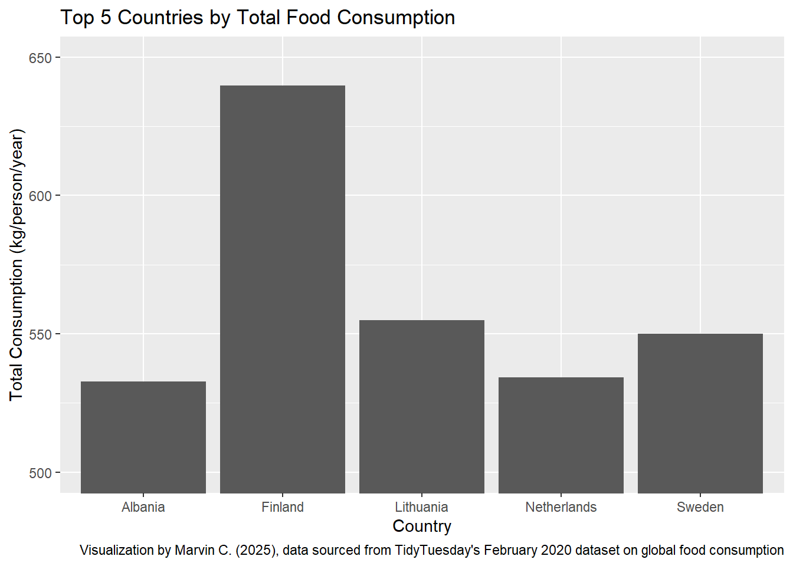
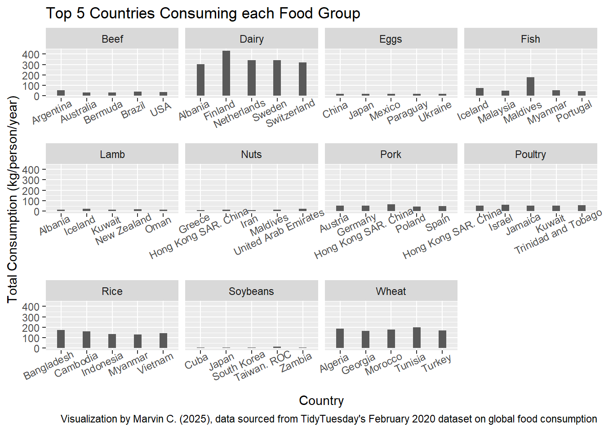
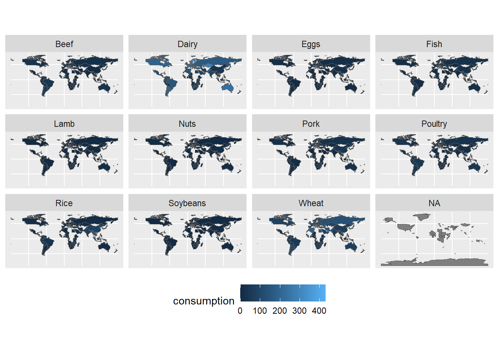
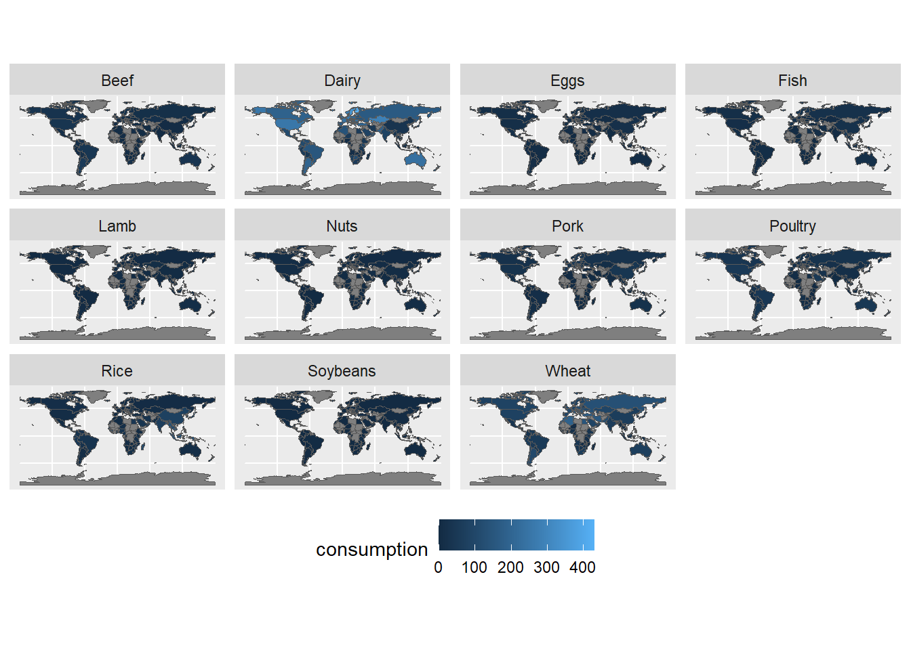
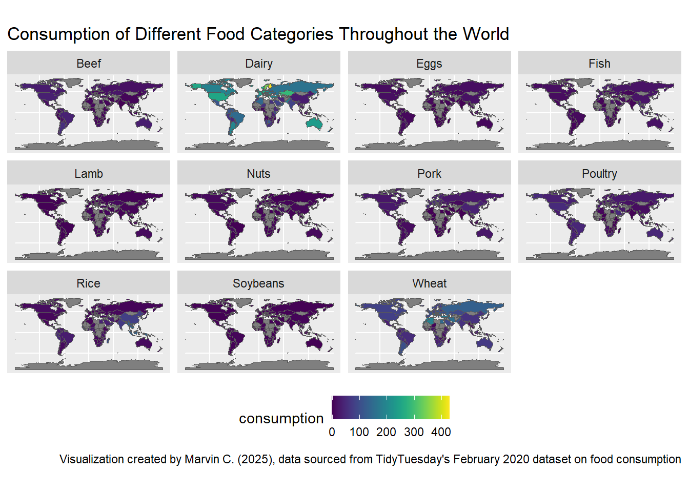

7 Exam 2
7.1 Inspecting the Data
spc_tbl_ [1,430 × 4] (S3: spec_tbl_df/tbl_df/tbl/data.frame)
$ country : chr [1:1430] "Argentina" "Argentina" "Argentina" "Argentina" ...
$ food_category: chr [1:1430] "Pork" "Poultry" "Beef" "Lamb & Goat" ...
$ consumption : num [1:1430] 10.51 38.66 55.48 1.56 4.36 ...
$ co2_emmission: num [1:1430] 37.2 41.53 1712 54.63 6.96 ...
- attr(*, "spec")=
.. cols(
.. country = col_character(),
.. food_category = col_character(),
.. consumption = col_double(),
.. co2_emmission = col_double()
.. )
- attr(*, "problems")=<externalptr> # A tibble: 22 × 4
country food_category consumption co2_emmission
<chr> <chr> <dbl> <dbl>
1 Argentina Pork 10.5 37.2
2 Argentina Poultry 38.7 41.5
3 Argentina Beef 55.5 1712
4 Argentina Lamb & Goat 1.56 54.6
5 Argentina Fish 4.36 6.96
6 Argentina Eggs 11.4 10.5
7 Argentina Milk - inc. cheese 195. 278.
8 Argentina Wheat and Wheat Products 103. 19.7
9 Argentina Rice 8.77 11.2
10 Argentina Soybeans 0 0
# ℹ 12 more rowsThe observations in the data seem like they’re countries and food groups, so an observation for each possible combination of food category and country.
Inspecting individual variables
# A tibble: 130 × 1
country
<chr>
1 Argentina
2 Australia
3 Albania
4 Iceland
5 New Zealand
6 USA
7 Uruguay
8 Luxembourg
9 Brazil
10 Kazakhstan
# ℹ 120 more rows# A tibble: 11 × 1
food_category
<chr>
1 Pork
2 Poultry
3 Beef
4 Lamb & Goat
5 Fish
6 Eggs
7 Milk - inc. cheese
8 Wheat and Wheat Products
9 Rice
10 Soybeans
11 Nuts inc. Peanut Butter There are 130 unique countries and 11 unique food categories. One issue that may arise when creating visualizations is that the food category names are too long and specific, so we should shorten them without loss of information.
Fixing the food_category variable
Code
# Shortening longer variable names
fcc <- fc |>
mutate(food_category = str_replace(food_category, " & Goat", ""),
food_category = str_replace(food_category, "Milk - inc. cheese", "Dairy"),
food_category = str_replace(food_category, "Wheat and Wheat Products", "Wheat"),
food_category = str_replace(food_category, "Nuts inc. Peanut Butter", "Nuts"))7.2 Countries with the Highest Consumption
Research Question 1: Which 5 countries consume the most food?
Code
# A tibble: 5 × 2
country total_consumption
<chr> <dbl>
1 Finland 640.
2 Lithuania 555.
3 Sweden 550
4 Netherlands 534.
5 Albania 533.The top 5 countries in terms of food consumption are, in order from greatest to least, Finland, Lithuania, Sweden, Netherlands, and Albania.
Code
# Visualizing the wrangled dataset
fcc |>
group_by(country) |>
summarize(total_consumption = sum(consumption)) |>
arrange(desc(total_consumption)) |>
head(5) |>
ggplot(aes(x = country, y = total_consumption)) +
geom_col() +
scale_y_continuous(breaks = seq(500, 650, 50)) +
coord_cartesian(ylim = c(500, 650)) +
labs(x = "Country",
y = "Total Consumption (kg/person/year)",
title = "Top 5 Countries by Total Food Consumption",
caption = "Visualization by Marvin C. (2025), data sourced from TidyTuesday's February 2020 dataset on global food consumption")
7.3 Most Consuming Countries of Each Food Category
Research Question 2: What are the top 5 countries in terms of consumption of each food group?
Code
# A tibble: 55 × 3
# Groups: food_category [11]
food_category country total_consumption
<chr> <chr> <dbl>
1 Beef Argentina 55.5
2 Beef Brazil 39.2
3 Beef USA 36.2
4 Beef Australia 33.9
5 Beef Bermuda 33.2
6 Dairy Finland 431.
7 Dairy Netherlands 341.
8 Dairy Sweden 341.
9 Dairy Switzerland 319.
10 Dairy Albania 304.
# ℹ 45 more rowsCode
fcc |>
group_by(food_category, country) |>
summarize(total_consumption = sum(consumption)) |>
slice_max(n = 5, order_by = total_consumption) |>
ggplot(aes(x = country,
y = total_consumption)) +
geom_col(width = 0.3) +
facet_wrap(~food_category,
ncol = 4,
scales = "free_x") +
theme(axis.text.x = element_text(angle = 25, vjust = 1.1, hjust=0.8)) +
labs(x = "Country",
y = "Total Consumption (kg/person/year)",
title = "Top 5 Countries Consuming each Food Group",
caption = "Visualization by Marvin C. (2025), data sourced from TidyTuesday's February 2020 dataset on global food consumption")
The graphs and table both answer our question.
7.4 Food Consumption Map
Research Question 3: What does the consumption of each food look like?
Viz Attempt 1
Code

Good first attempt. Some issues:
- NA should not be represented
- We are missing actual data on some countries, like the US and a good chunk of Africa
Let’s find out what countries don’t have values associated with them for our next attempt
Code
name
1 Afghanistan
2 Antarctica
3 Azerbaijan
4 Benin
5 Bhutan
6 Bosnia and Herz.
7 Brunei
8 Burkina Faso
9 Burundi
10 Central African Rep.
11 Chad
12 Czechia
13 Côte d'Ivoire
14 Dem. Rep. Congo
15 Djibouti
16 Dominican Rep.
17 Eq. Guinea
18 Eritrea
19 Falkland Is.
20 Fr. S. Antarctic Lands
21 Gabon
22 Greenland
23 Guinea-Bissau
24 Guyana
25 Haiti
26 Iraq
27 Kosovo
28 Kyrgyzstan
29 Laos
30 Lebanon
31 Lesotho
32 Libya
33 Mali
34 Mauritania
35 Moldova
36 Mongolia
37 Montenegro
38 N. Cyprus
39 North Korea
40 North Macedonia
41 Palestine
42 Papua New Guinea
43 Puerto Rico
44 Qatar
45 S. Sudan
46 Solomon Is.
47 Somalia
48 Somaliland
49 Sudan
50 Suriname
51 Syria
52 Taiwan
53 Tajikistan
54 Timor-Leste
55 Turkmenistan
56 United States of America
57 Uzbekistan
58 Vanuatu
59 W. Sahara
60 Yemen
61 eSwatiniViz Attempt 2
Code
world |>
select(name, geometry) |>
mutate(name = ifelse(name == "United States of America", "USA", name)) |>
mutate(name = ifelse(name == "Bosnia and Herz.", "Bosnia and Herzegovina", name)) |>
mutate(name = ifelse(name == "Czechia", "Czech Republic", name)) |>
mutate(name = ifelse(name == "Taiwan", "Taiwan. ROC", name)) |>
left_join(fcc |> select(-co2_emmission),
join_by(name == country)) |>
pivot_wider(names_from = food_category,
values_from = consumption) |>
select(-"NA") |>
pivot_longer(cols = c(-name, -geometry),
names_to = "food_category",
values_to = "consumption") |>
ggplot() +
geom_sf(aes(fill = consumption)) +
facet_wrap(~food_category) +
theme(legend.position = "bottom")
This is a better visualization, but there is still an issue: the color scale makes it so that instead of looking at the consumption of each food category individually, we see them in relation to each other. We can solve this by instead taking the averages of the consumption of each food category, and standardizing the scale. That way we can see if each country consumes an average, more than average, or less than average amount of that food group.
First, let’s look at some numerical summaries to get an idea of this:
Code
# A tibble: 11 × 6
food_category min max range mean sd
<chr> <dbl> <dbl> <dbl> <dbl> <dbl>
1 Beef 0.78 55.5 54.7 12.1 9.65
2 Dairy 3.04 431. 428. 126. 93.3
3 Eggs 0.16 19.2 19.0 8.16 5.03
4 Fish 0.24 180. 179. 17.3 19.0
5 Lamb 0 21.1 21.1 2.60 3.67
6 Nuts 0.18 23.0 22.8 4.14 3.37
7 Pork 0 67.1 67.1 16.1 15.7
8 Poultry 0.47 62.5 62.0 21.2 14.6
9 Rice 0.95 172. 171. 29.4 37.3
10 Soybeans 0 17.0 17.0 0.861 2.08
11 Wheat 2.74 198. 195. 71.5 44.2 Final Viz Attempt
Code
world |>
select(name, geometry) |>
mutate(name = ifelse(name == "United States of America", "USA", name)) |>
mutate(name = ifelse(name == "Bosnia and Herz.", "Bosnia and Herzegovina", name)) |>
mutate(name = ifelse(name == "Czechia", "Czech Republic", name)) |>
mutate(name = ifelse(name == "Taiwan", "Taiwan. ROC", name)) |>
left_join(
fcc |>
select(-co2_emmission) |>
group_by(food_category) |>
mutate(consumption = consumption - (mean(consumption) / sd(consumption))),
join_by(name == country)) |>
pivot_wider(names_from = food_category, values_from = consumption) |>
select(-"NA") |>
pivot_longer(cols = c(-name, -geometry),
names_to = "food_category",
values_to = "consumption") |>
ggplot() +
geom_sf(aes(fill = consumption)) +
facet_wrap(~food_category) +
theme(legend.position = "bottom") +
scale_fill_viridis() +
labs(title = "Consumption of Different Food Categories Throughout the World",
caption = "Visualization created by Marvin C. (2025), data sourced from TidyTuesday's February 2020 dataset on food consumption")